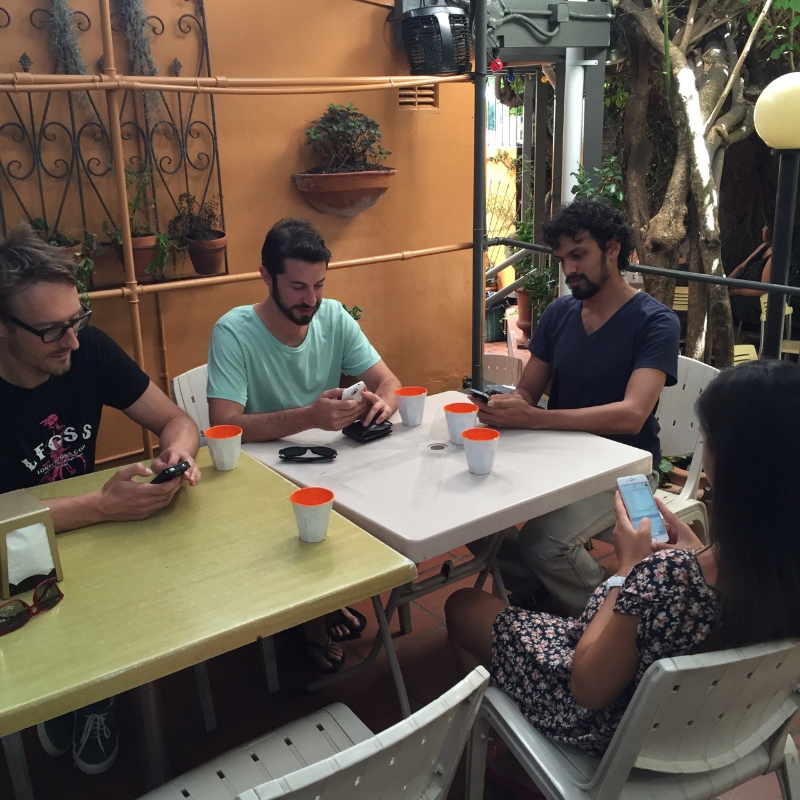

Sat, 14 Feb 2015 14:18:23 · ux · sydney · australia · alonetogether
my team at boomworks sydney being alonetogether

My team at Boomworks #Sydney being #AloneTogether whilst waiting for our lunches.
Sat, 14 Feb 2015 14:18:23 · ux · sydney · australia · alonetogether

My team at Boomworks #Sydney being #AloneTogether whilst waiting for our lunches.